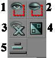

Hiding Actors
When you open an Epic map for the first time, you think "sheesh! what's all that!". Maps are full of stuff, even more so with the higher level of detail in UT2004 maps.
So, to keep some shred of sanity, there are several ways in the UnrealEd Interface to hide parts of a map while you focus on a small piece of the action.
Generally, hiding actors in UnrealEd is a good idea because...
- it makes selecting smaller items easier
- on large maps it speeds up rebuilding if the "Only visible actors" option is checked
- it decreases danger of accidentally moving things
- it makes things look easier.
Hiding by type
Under Viewport Caption Context Menu → View there's a list of types of things that can be hidden or shown.
For example, set the 3D viewport to show paths, hit Q to hide the BSP, and W to hide static meshes. This gives a really clear overview of the [botpath network]?.
Hiding specific objects
Use the actor visibility set of buttons in the toolbox to hide or show actors currently selected.

|
- Show Selected Actors Only
- Hide Selected Actors
- Show All Actors
- Invert Selection
- Change Camera Move Speed
The first two buttons are very useful in combination with different methods of selecting actors. Try, for example:
- Actor Context Menu → Select submenu commands
- using CTRL+ALT+drag to select an area of a map
Groups
You can use the grouping thing to hide actors in your map. The grouping is not very widely used – maybe because it brings in new stuff to learn. (It's also buggy in early versions of UnrealEd, or at least complex enough to seem unpredictable). However, I guarantee it is worth the pain; especially if you are working with a complex map with lot of actors in it.
Here are some guidelines on how to make grouping a bit easier:
- Precede the group names with a number and leave gaps in between so you can add groups later in the gaps. UnrealEd shows the group list in alphabetical order.
- Never let actors to belong in more than one group. Doing this makes things confusing. (And an actor's membership of groups is stored in a field with a limited length – this is a source of buggy behaviour when this field's contents gets truncated.)
- Do not group actors by their class hierarchy (grouping pathnodes, brushes, etc) – this would be useless since it is already available (see above). Instead group them by their location or use whichever seems to be more suitable. som examples might be:
- group by room, allows you to build the map one room at a time.
- group by function in the game, eg red base, blue base, etc
- group particular objects, eg all the lights that come from a particular type of source static mesh
You can hide all the actors in a group by uncchecking the box beside the group name. Alternatively, there's a toolbar button to select all actors in the currently selected group. You can then use the actor visibility set of buttons in the toolbox (see above).
To see grouping in full action look at [JB-12-Cubes]. It has 12 cubes (what did You expect) and these can be build separately. This grouping speeded up the compilation a lot.